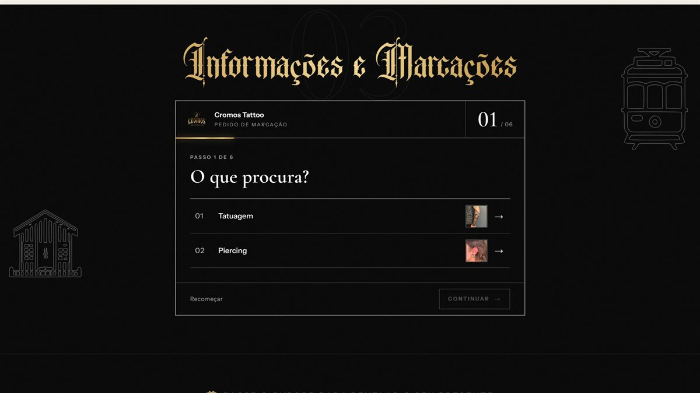

Marcar num toque, de qualquer país.
Botão "Marcar" sempre à vista e pedido por passos: tatuagem ou piercing, estilo, zona, tamanho e artista.
O pedido chega pronto ao WhatsApp, com +351 e a mensagem já escrita, e abre a conversa a partir de qualquer país.
Pedido por passosWhatsApp +351Mensagem pronta
